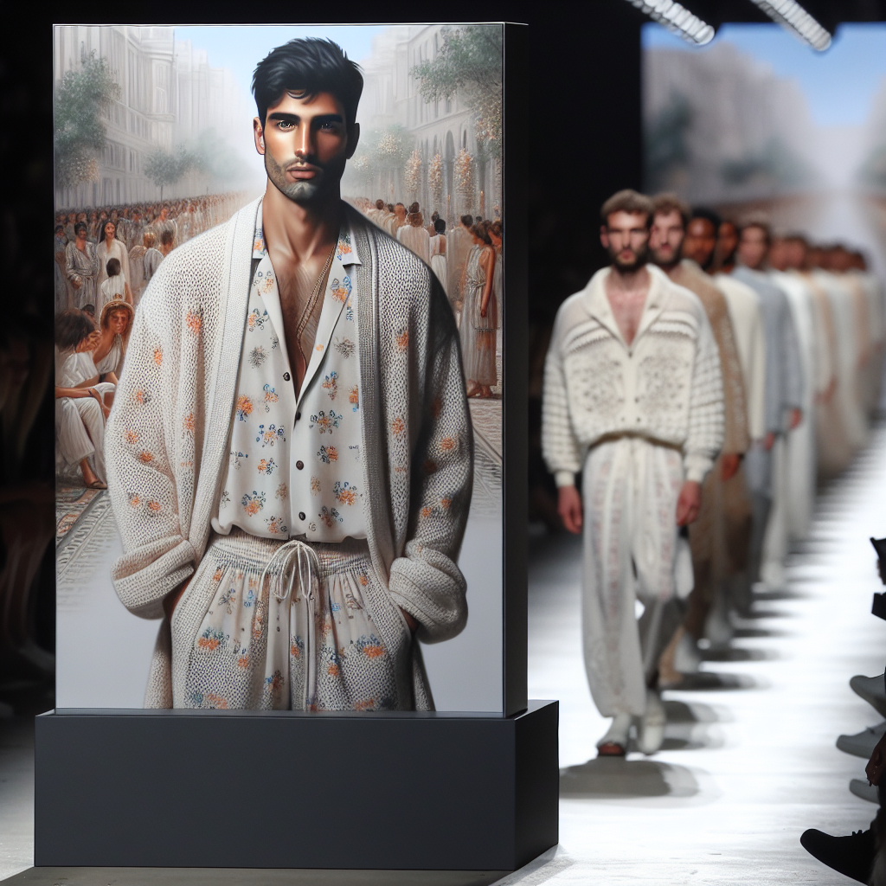
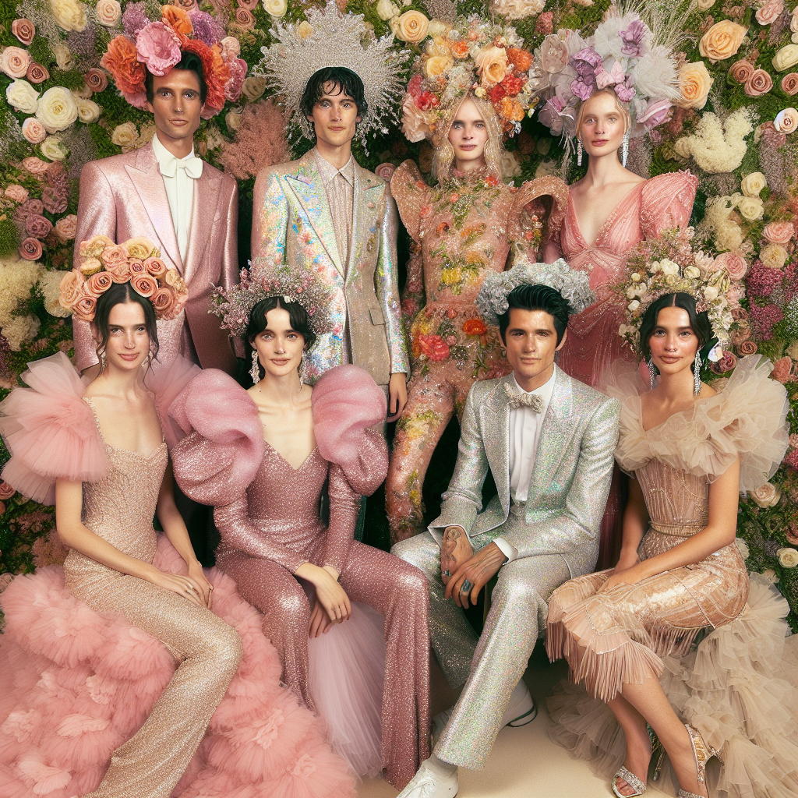
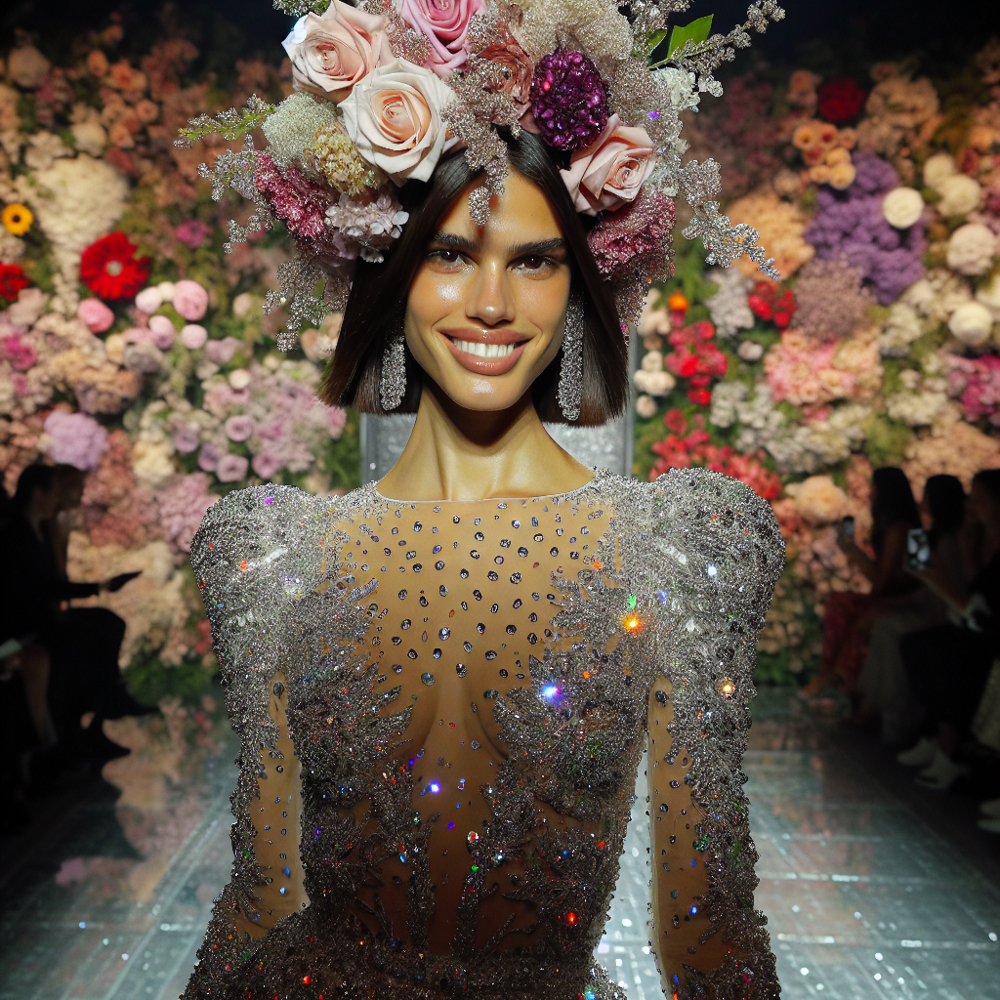
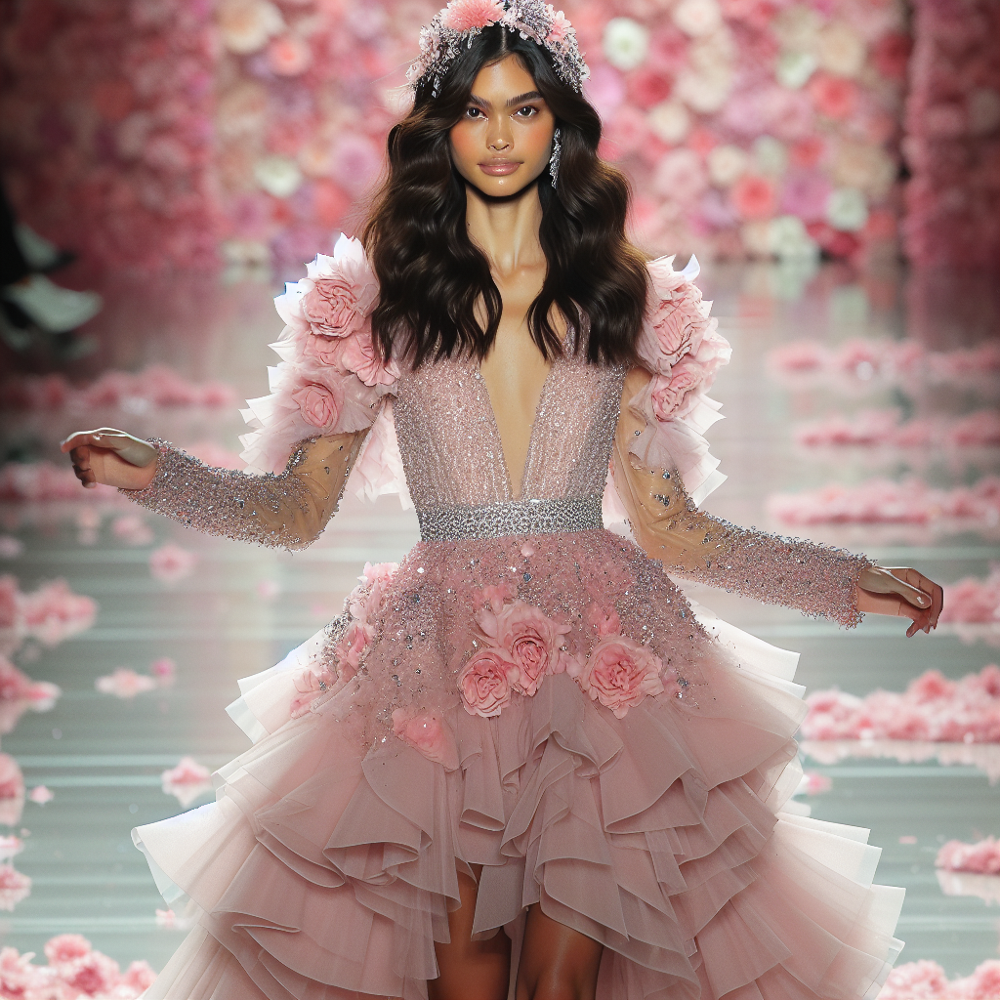

---
title: "Creating a Runway Show for LoveShackFancy"
description: "Can AI understand LoveShackFancy's brand aesthetic?"
date: "2/23/2024"
categories:
- LLMs
- prompting
- logic
---Introduction:
LoveShackFancy is a rising fashion brand defined by its vintage aesthetic and its designs filled with ruffles, florals, and unique prints. To me, LoveShackFancy has one of the strongest brand images in the fashion industry; whenever I see one of their designs, I can tell that it’s LoveShackFancy. With this, I wanted to see if the Dall-E-3 model could understand unique brand images in fashion.
Prompt 1:
I obtained this description of LoveShackFancy from an article on Google to give to the model. After providing this information, I told the model to generate a runway design based on this.
Launched by former fashion editor Rebecca Cohen in 2013, the US brand has become renowned for its ditsy retro prints, breezy white cotton sun dresses and cosy knitted cardigans. Now with childrenswear, swimwear and nightwear under its belt, and with bridal and interiors coming next, the label is morphing into much more than the dress label it once was, heading into the direction of a full-blown lifestyle brand. We caught up with Cohen to find out how she got here and what might be next.
Like many of the most successful fashion brands, Cohen launched her label after spotting a gap in the market. When planning her wedding, she found that there were no bridesmaid dresses that captured what she was looking for, so she decided to make her own.
“My mum and I decided to design these dreamy silk halter dresses that captured an ethereal but sexy sensibility,” she explained. “Everyone loved them and asked to purchase so I started hand-dying dresses in my backyard with my mum – playing around with a soft muted palette and selling them at trunk shows throughout the Hamptons.”
An overflow of pink, prints, ruffles and lace that speaks not just to romantics at heart but anyone who wants to feel beautiful and confident in their own skin.Based on this information, create a hyper realistic design for a runway model for a fashion show for this brand.
Design 1
The design is quite simple but not bad. Let me try to generate another design using this prompt.
Design 2

Part of what defines LoveShackFancy is their use of bright and pastel colors. However, I noticed that these designs seemed muted so I decided to generate a different prompt.
Generating a New Prompt
I decided to use the gpt-4-vision-preview model to see how AI would describe LoveShackFancy’s brand. I input the image shown below and gave the prompt: “What’s in this image?”
In the image, I see a group of six individuals who appear to be women, dressed in various shades and styles of pink dresses. They are posing for a photo and some of them are wearing accessories such as headpieces adorned with flowers. Their outfits range from sparkly and embellished dresses to more ruffled and flowing fabrics. They are all smiling and appear to be in a celebratory mood. In the background, there is a wall decorated with an abundance of flowers, predominantly roses, which complement the pink theme of their attire. The setting suggests that they may be at a themed event or party.
Since this seemed how AI would interpret LoveShackFancy’s brand, I then used this description as a prompt for the Dall-e-3 model.
Revamped Designs

The model recreated the image (I didn’t prompt it to create a design), but the style seemed to match LoveShackFancy’s! I then used this description and asked the model to create fashion designs based on it.
New Design 1

This design seemed better than the first design. The model seems slightly scary but that’s ok.
New Design 2
This design is again better than the last one, but I noticed that it slowly wasn’t starting to represent LoveShackFancy’s brand anymore. With it’s tightfitting bodysuits and flower crowns, it seemed to start to feel like more of a Victoria’s Secret fashion show. I specifically wanted to get rid of the excessive flowers: floral prints would be ok, and accessive amount of flowers is not. I then prompted the model to remove the flowers.
New Design 3

The design of the dress is better but there are still many, many flowers to be seen. It seems that the model can’t detect flowers from it’s own design.